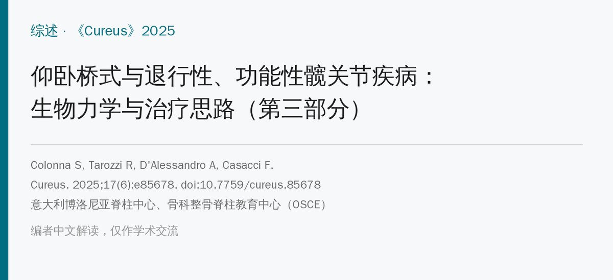
🔖原文信息（编者中文重排）
📚 文献信息
▪ Colonna S, Tarozzi R, D'Alessandro A, Casacci F. Supine Bridge Exercise in Degenerative and Functional Hip Disorders: A Biomechanical and Therapeutic Approach (Part III). Cureus. 2025;17(6):e85678. doi:10.7759/cureus.85678
▪ 作者单位：意大利博洛尼亚脊柱中心、骨科整骨脊柱教育中心（OSCE）
▪ 文章类型：叙述性综述＋作者的理论模型，三部曲的最后一篇（前两篇讲桥的做法和腰痛）
作者认为，很多非创伤性髋关节问题（股骨髋臼撞击、微不稳、早期髋关节炎）背后有一个共同的力学问题：股骨头向前滑。而桥式只要做对——多用臀大肌下部、少用腘绳肌——就有可能把股骨头“拉”回后方，减少前方剪切力。
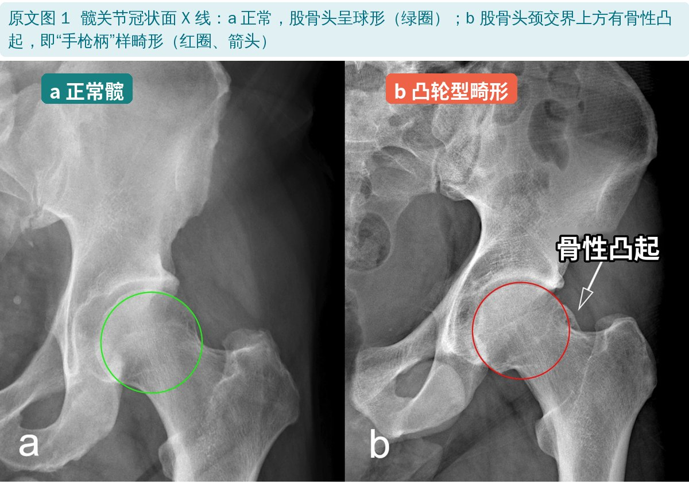
🔖原文图 1：冠状面 X 线（图中英文已改为中文）
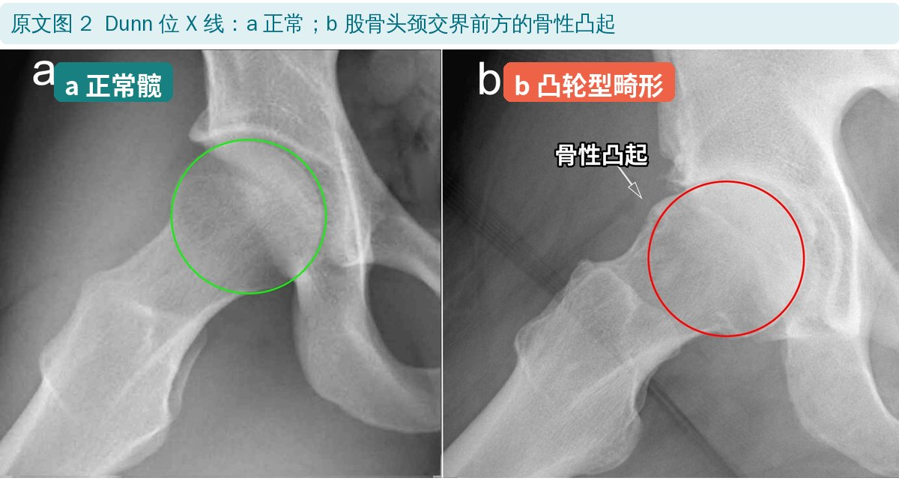
🔖原文图 2：Dunn 位 X 线
• 股骨髋臼撞击：屈髋、内旋时股骨头颈和髋臼缘异常接触；凸轮型是股骨头颈交界处有骨性凸起（“手枪柄”畸形），钳夹型是髋臼覆盖过多，也有混合型
• 凸轮型常伴髋痛、内旋受限、盂唇撕裂和软骨损伤，久之可能发展为髋关节炎；物理治疗改变不了骨头形态，但可能改变骨盆和关节的力学
• 作者引用的观点：凸轮型的不稳主要在前上方——股骨头偏前时与髋臼软骨的接触面积减小，压力和剪切力明显增加，而软骨最怕剪切
• 限制股骨头前移的主要是前方关节囊和盂唇；伸髋＋外旋时前方关节囊最紧，这也是髋“恐惧试验”的体位
• 足球：一项研究中 120 名职业球员 61.6% 有凸轮型撞击的影像表现，对照组仅 11.6%；内旋受限是青少年球员最早出现的改变之一，而且内旋受限与髋痛的关联可能比与凸轮畸形本身更强
• 芭蕾：82 名职业舞者（164 髋）中，单纯凸轮型约 65%；“外开”要求髋外旋，舞者髋内旋和内收常受限；MRI 显示舞者劈叉时股骨头平均半脱位约 2 mm
• 作者推测：外展外旋肌群过度活跃或短缩，可能导致股骨头前滑；手枪柄畸形甚至可能是长期前滑摩擦造成的结果，而不只是原因
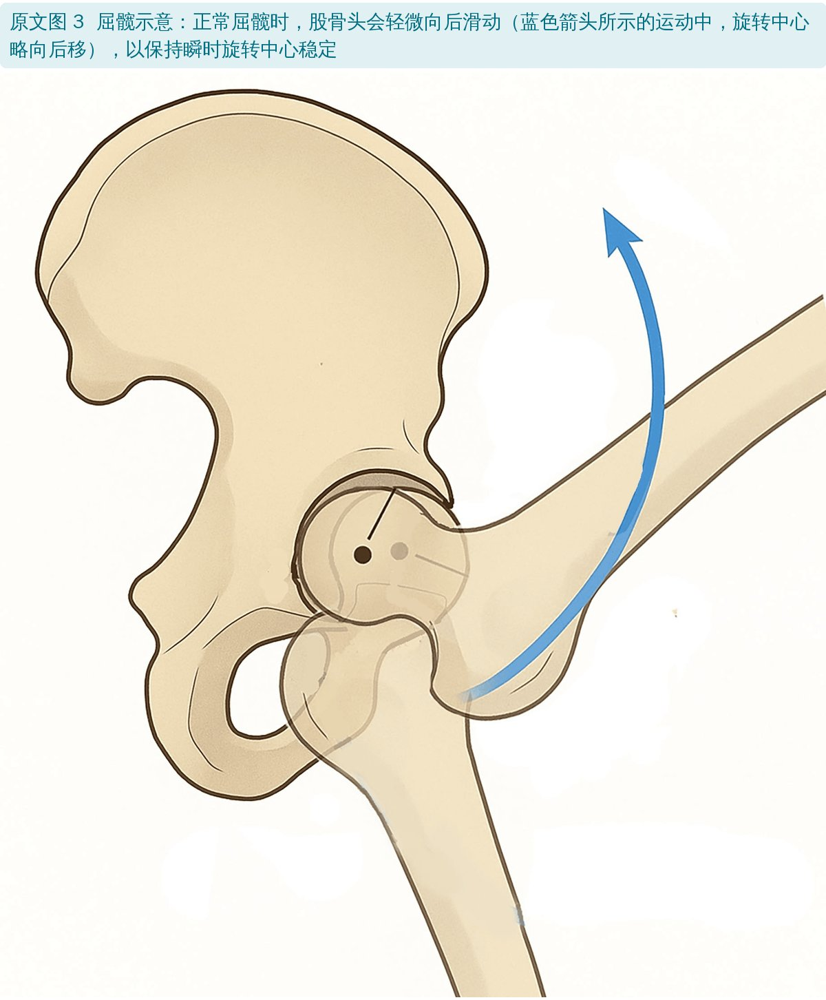
🔖原文图 3：屈髋时股骨头轻微后滑
• Sahrmann 描述的股骨前滑综合征：屈髋时股骨头不能正常后滑，或伸髋时过度前滑，导致前方疼痛；仰卧直腿抬高、俯卧伸髋时，可看到或摸到大转子向前（内）移动
• 可能原因：屈髋时髂腰肌不足、伸髋时臀肌不足；阔筋膜张肌主导还会带来过度内旋，挤压盂唇
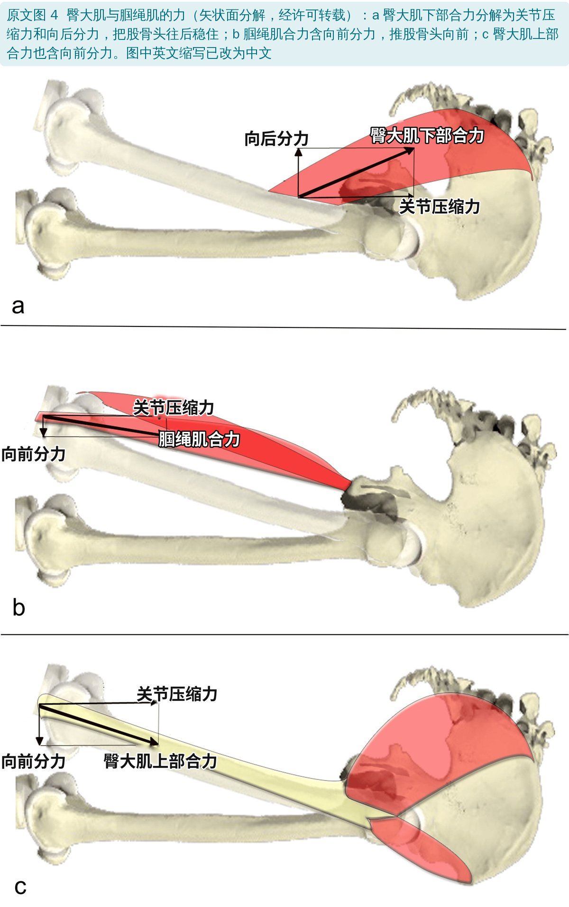
🔖原文图 4：臀大肌下部、腘绳肌、臀大肌上部的力（图中英文已改为中文）
• 臀大肌上部（髂嵴起、止于髂胫束）：力线在髋旋转中心上方，主要外展、外旋
• 臀大肌下部（骶尾、骶结节韧带起）：在旋转中心下方，是主要的伸髋肌，合力中有一个向后的分力，能稳住股骨头
• 腘绳肌和臀大肌上部的合力则含向前的分力，会推股骨头向前
• 所以伸髋时需要臀大肌下部先发力、占主导；但臀大肌下部只占整块肌肉约 20%，能否单独激活目前也不清楚
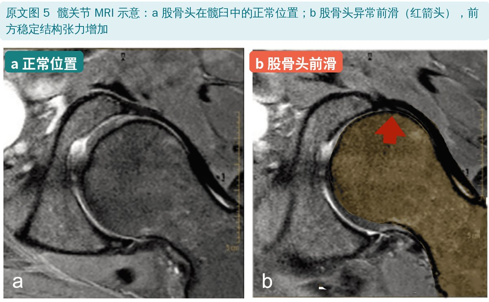
🔖原文图 5：股骨头正常位置与前滑
• 晚期髋关节炎患者：患侧臀大肌上下部都萎缩；健侧臀大肌上部比正常人大约 30%，下部没有显著差别——提示单纯“练臀”可能主要练到了上部
• 协同肌主导：臀大肌弱时，腘绳肌和内收肌代偿伸髋；交互抑制：屈髋肌紧张可能抑制臀大肌。一项研究中屈髋肌短的女足运动员，下蹲时臀大肌激活更低、腘绳肌参与更多
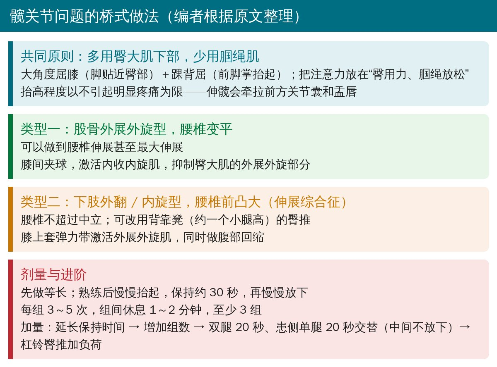
🔖髋关节问题的桥式做法（编者根据原文整理）
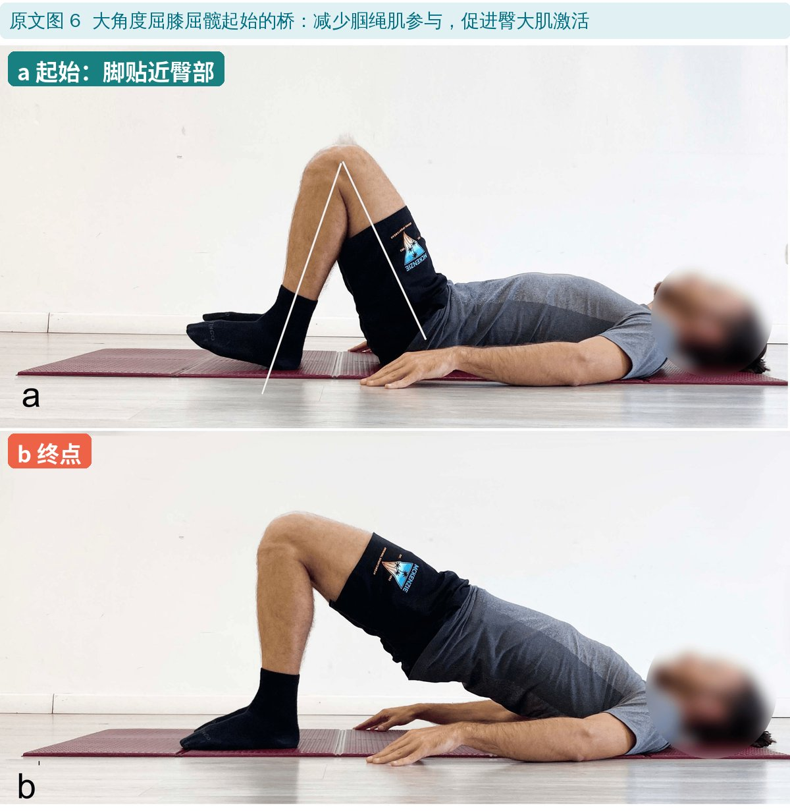
🔖原文图 6：脚贴近臀部
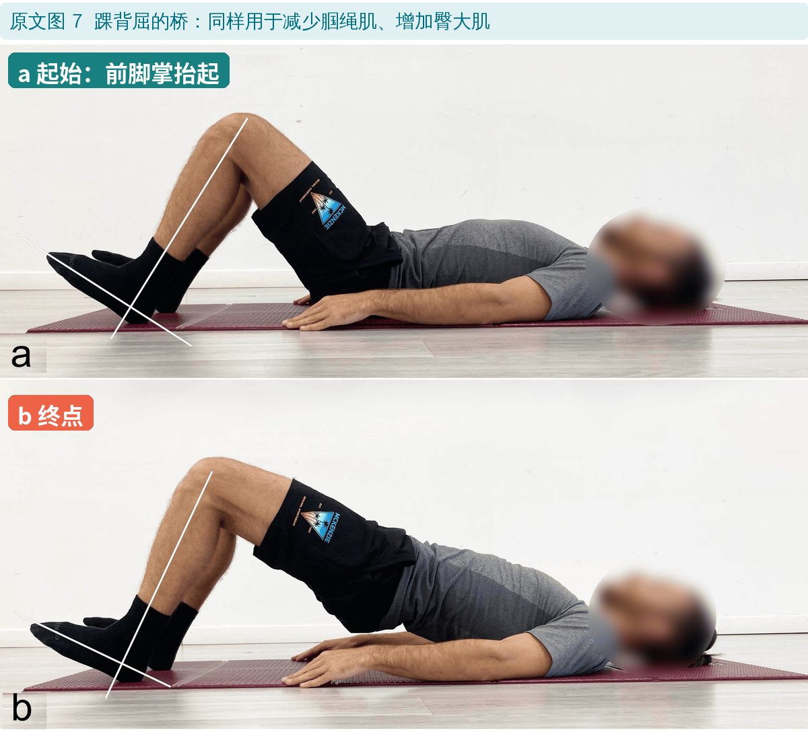
🔖原文图 7：踝背屈
• 屈膝角度越大、足跟着地，腘绳肌越少、臀大肌越多（第一篇的肌电数据）
• 伸髋会牵拉前方关节囊和盂唇，抬高程度以不引起明显疼痛为限
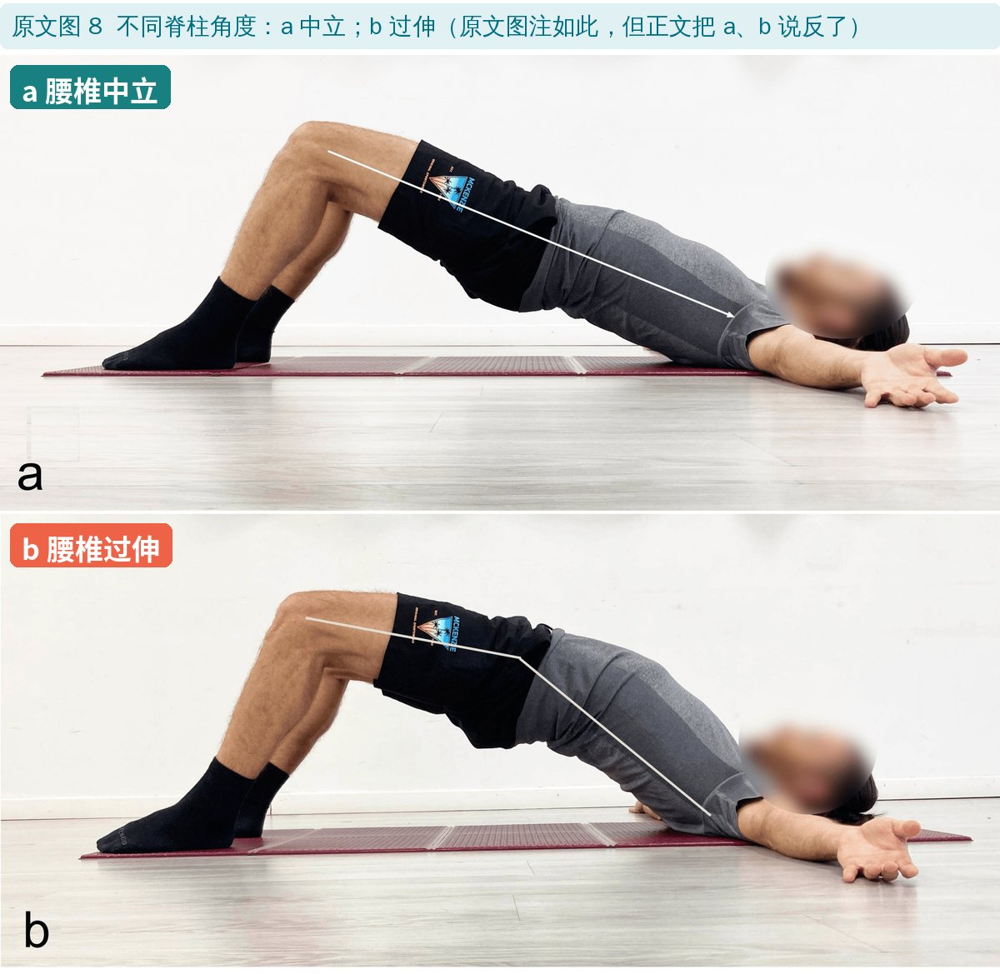
🔖原文图 8：腰椎中立与过伸
• 股骨外展外旋型＋腰椎变平（常见）：腰椎可以伸展甚至到最大；膝间夹球激活内收内旋肌，抑制臀大肌的外展外旋部分
• 下肢外翻 / 内旋型＋腰椎前凸大（伸展综合征）：腰椎不超过中立，可改做背靠凳（约一个小腿高）的臀推；膝上套弹力带激活外展外旋肌，同时做腹部回缩
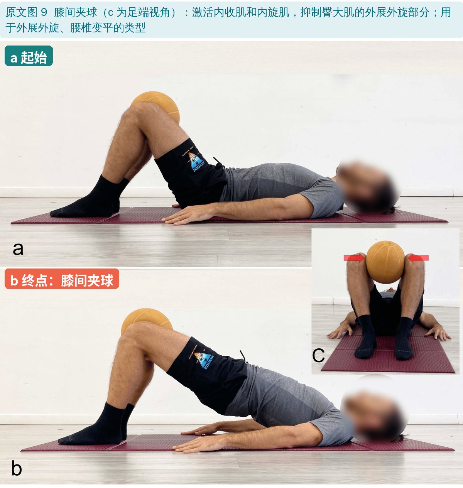
🔖原文图 9：膝间夹球
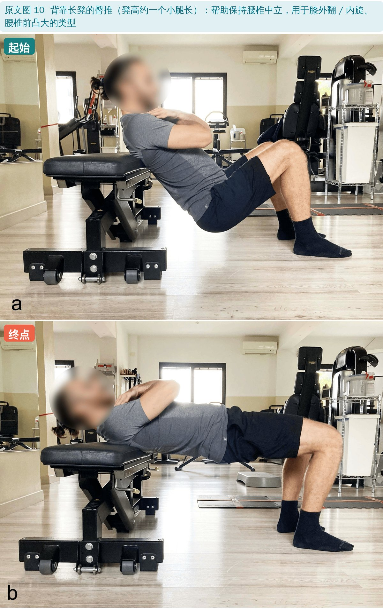
🔖原文图 10：背靠凳的臀推
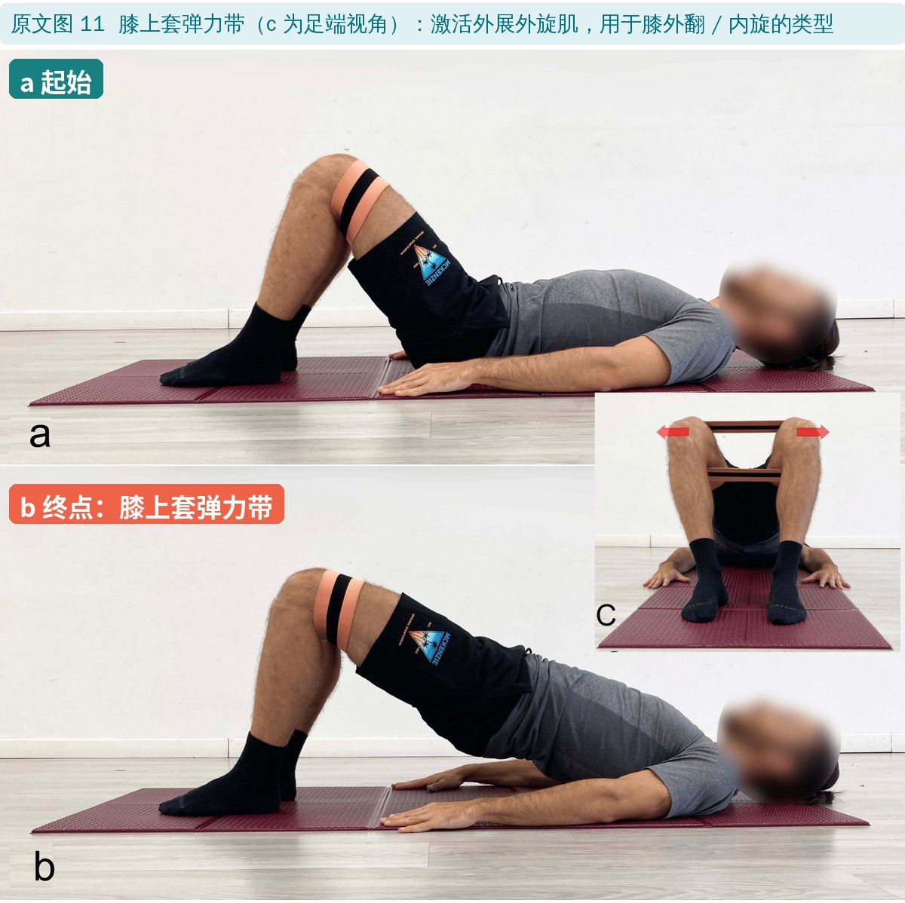
🔖原文图 11：膝上套弹力带
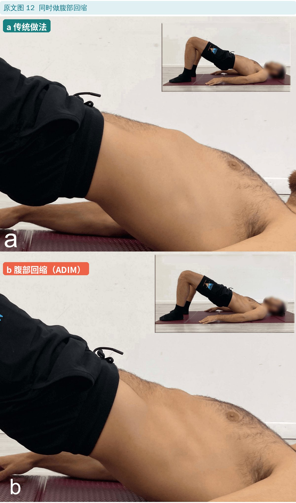
🔖原文图 12：腹部回缩
• 开始几次先做等长，把注意力放在“臀用力、腘绳放松”
• 熟练后：慢慢抬起 → 保持约 30 秒 → 慢慢放下；每组 3～5 次，组间休息 1～2 分钟，至少 3 组
• 加量：延长保持时间 → 增加组数 → 双腿 20 秒、患侧单腿 20 秒交替（中间不放下）→ 杠铃臀推加负荷
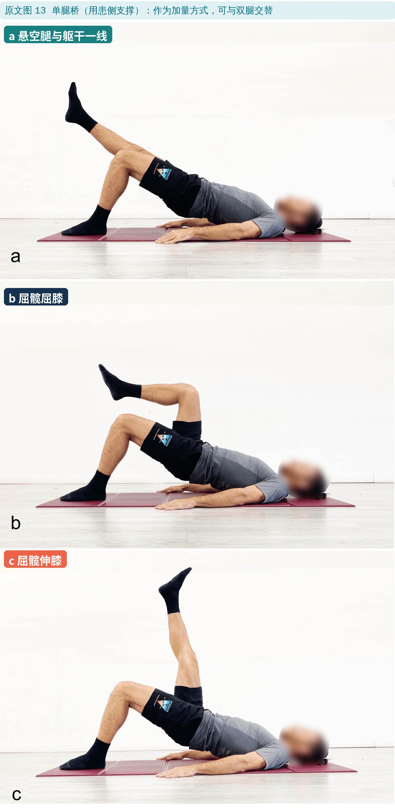
🔖原文图 13：单腿桥
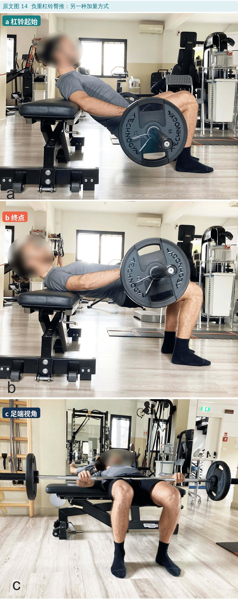
🔖原文图 14：负重杠铃臀推
• 核心机制没有被直接证实：活动中股骨头前滑尚无法在活体直接测量；“桥能把股骨头拉回后方”是理论推演，没有影像或生物力学研究验证
• 能否单独练到臀大肌下部未知：作者自己也承认，臀大肌上下部是否有不同的神经支配、能否选择性激活都不清楚
• 没有临床研究：没有任何桥式治疗髋撞击、微不稳或髋关节炎的对照试验，文中引用的成功案例是个案和小病例系列，用的也不是桥
• 结论用词偏强：结论“强烈推荐”在足球、舞蹈人群中加入桥式预防，证据并不支持这样的力度
• 作者致谢中说明使用了 ChatGPT 润色语言
• 优点：把髋撞击、微不稳和股骨前滑放到同一个力学框架里，提醒“练臀”要区分上下部、警惕腘绳肌代偿，给出了具体的体位和剂量
• 图 8 的 a、b 说反了：图注是“a 中立、b 过伸”，正文却写“伸展甚至最大（图 8a）”“不超过中立（图 8b）”——第二篇的图 5 也有同样的问题
• 芭蕾数据加不起来：164 髋中凸轮型 106、钳夹型 6、混合型 7、无异常 49，合计 168；49/164 是 29.9%，原文写 29.5%
• 股骨头前滑的“罪魁”前后不一：先说前滑通常归因于腘绳肌相对臀大肌过度，后又说是臀大肌上部等外展外旋伸肌过度活跃导致前滑；同时又说臀大肌上部止于外侧肌间隔的部分可能产生向后的力
• 同一句话出现两次：“职业球员髋活动度（尤其内旋）下降与症状和损伤相关，即使没有凸轮畸形”在足球一节重复；舞者股骨头半脱位 2.05 mm 也重复出现，一处写“劈叉位”，一处写“伸展位”
• 引用混用：文献 [52]（Goodman，骨骼遗骸中的手枪柄畸形）同时被用来支持“髋痛与屈髋受限更相关”
• 名称和拼写：摘要写 FAGS，正文写 FAGT；“瞬时旋转中心”缩写为 PICR；关键词“upine bridge exercise”“hip disfunction”
• 类型二的做法有张力：前文要抑制臀大肌上部的外展外旋作用，伸展综合征一型又建议用弹力带激活外展外旋肌，没有说明如何兼顾
• 髋前方痛的人练臀桥：脚贴近臀部、前脚掌抬起，减少腘绳肌代偿；抬到不痛的高度为止，不追求过伸
• 看腰椎曲度选附加动作：腰平、外展外旋明显 → 膝间夹球；腰前凸大、膝内扣 → 膝上套带＋收腹，或背靠凳臀推
• 剂量参考：等长起步，保持约 30 秒 × 3～5 次 × 至少 3 组，再逐步加单腿交替和负重
• 关注内旋受限：足球、舞蹈人群内旋受限常见，可作为早期筛查指标
• 股骨头前滑和“臀大肌下部”理论仍待验证，桥式只是髋关节综合康复的一部分，仍要结合症状、影像和其他训练
欢迎关注骨科康复小黄公众号，获取更多物理治疗的专业知识！
📄参考文献：
Colonna S, Tarozzi R, D'Alessandro A, Casacci F. Supine Bridge Exercise in Degenerative and Functional Hip Disorders: A Biomechanical and Therapeutic Approach (Part III). Cureus. 2025;17(6):e85678. doi:10.7759/cureus.85678
原文以 CC BY 4.0 协议开放获取，版权归原作者所有（原文图 4 为原作者经许可转载自其早前文章）。本文为学术交流用的中文解读：原文图 1～14 引自原文，图 1、2、4 中英文已改为中文，其余图中中文标签为编者所加；做法卡为编者根据原文整理。如有侵权请联系删除。